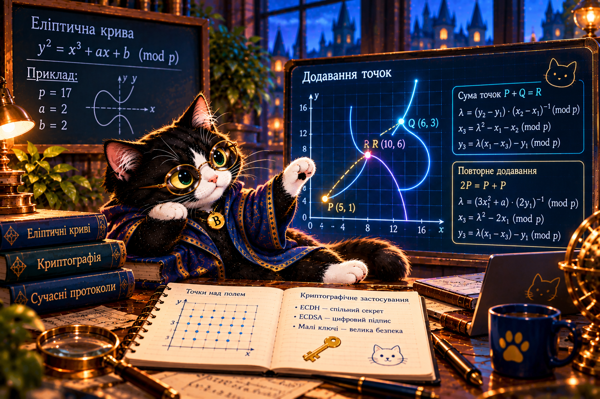

2.13. Еліптичні криві — інша математична дорога
Як додавання точок допомагає домовитися про секрет, не розкриваючи приватне число?
Буч відкриває лабораторію точок. Тут координати живуть у скінченному полі, а повторне додавання точки стає математичною основою ECDH.

Маршрут місії
Проблема: чому не можна просто намалювати криву?
У нашій моделі y² ≡ x³ + 2x + 2 (mod 17). Координати — цілі числа від 0 до 16, а не всі точки гладкої лінії. Наприклад, (5,1) належить кривій: 1² ≡ 5³ + 2·5 + 2 ≡ 1 (mod 17).
Це навчальна крива з малими параметрами. Її не можна використовувати для захисту реальних даних.
Як це пов’язано з секретом?
Аліса
Приватне aПублічне A = aG
Відкритий канал
Обмін A та BСпостерігач бачить точки
Боб
Приватне bПублічне B = bG
Аліса обчислює aB, Боб — bA. Обидва отримують ту саму точку abG. Але без перевірки справжності відкритих точок можлива атака посередника.
Короткий Python
p = 17
a, b = 2, 2
def on_curve(x, y):
return (y*y - (x*x*x + a*x + b)) % p == 0
print(on_curve(5, 1)) # True
print(on_curve(5, 2)) # FalseКомпетентнісне завдання
Шкільний чат обмінюється відкритими точками. Чи достатньо цього, щоб бути впевненим у співрозмовнику? Змоделюйте підміну, поясніть ризик і запропонуйте захист із перевіркою ключів.